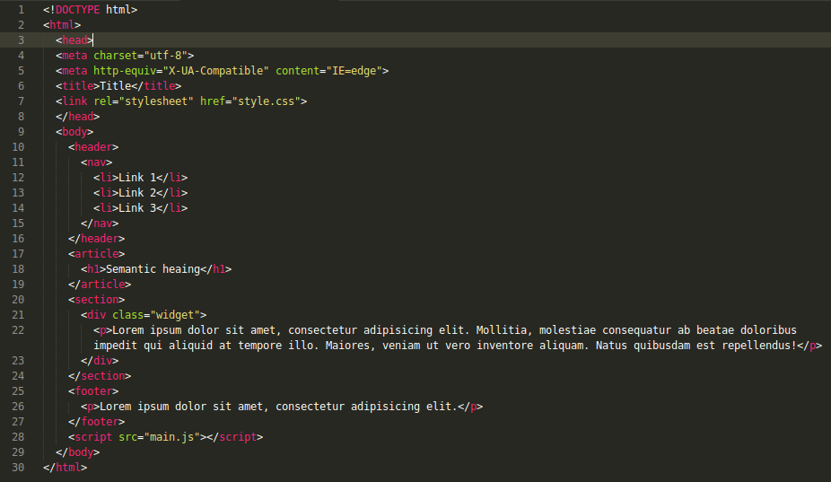
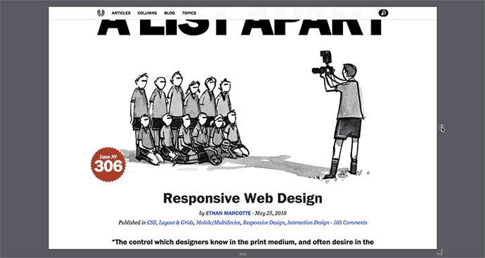
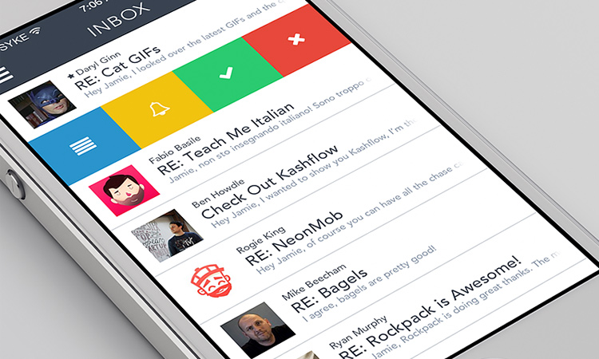

Front End Developer
(NÃO MAIS O MENINO DO HTML)
Created by @octavioamu / @gabrihellmateus
O que é um Desenvolvedor Front End?
O profissional Front End é o encarregado de desenvolver a interface do usuário, ou seja, o client-side.
Antigamente existia apenas o "webmaster" e "webdesigner". Os sites eram praticamente todos estáticos e os editores WYSIWYG
(Ex: FrontPage, Dreamweaver) eram os mais utilizados.
Não existia preocupação com o código e sua manutenção, nem tecnologia adequada para tal fim.
CSS e Javascript ficavam dentro do mesmo arquivo HTML.
As tecnologias ficaram cada vez mais populares e os cargos foram dívidos:
- Webdesigner
- Programador PHP
- Desenvolver Front End
- Entre outros
Responsabilidades do
Desenvolvedor Front End
Estrutura dos elementos e semântica (HTML)
Estilização dos elementos (CSS)
/* GLOBAL STYLES
*********************************************/
body {
background: #111111;
background-color: #111111; }
.reveal {
font-family: "Open Sans", sans-serif;
font-size: 30px;
font-weight: normal;
letter-spacing: -0.02em;
color: #eeeeee; }
/* HEADERS
*********************************************/
.reveal h1 {
text-shadow: 0px 0px 6px rgba(0, 0, 0, 0.2);
}
Interação com o usuário (Javascript e CSS)
Cross-Browsing (Graceful Degradation)
Progressive Enhancement

Design Responsivo
Diferença entre Layout Responsivo, adaptativo e líquido
Mobile
Não confundir com Design Responsivo.
Otimização da performance, tempo de carregamento e renderização

Otimização do código para facilitar a indexação (SEO)

Acessibilidade WCAG (WAI)
"...prática inclusiva de fazer websites que possam ser utilizados por todas as pessoas que tenham deficiência ou não. Quando os sites são corretamente concebidos, desenvolvidos e editados, todos os usuários podem ter igual acesso à informação e funcionalidade."
- Minerals
- Zinc
- Gold
- Yellow Gold
- White Gold
- Silver
- Vegetables
- Carrot
- Tomato
Structured data
Microformats, Microdata, RDFa
Microformats
Convensão para descrever tipos de informação. Ex: Informação de contato
 Bob Smith
Senior editor at ACME Reviews
200 Main St
Desertville, AZ 12345
Bob Smith
Senior editor at ACME Reviews
200 Main St
Desertville, AZ 12345
Com microformato hCard:
Bob Smith
Senior editor at ACME Reviews
200 Main St
Desertville, AZ
12345
Fonte: https://support.google.com/webmasters/answer/146897?hl=en
Microdata
Rich snippets utlizando vocabulario que Google, Yahoo e Microsoft conseguem entender www.schema.org/
My name is Bob Smith but people call me Smithy. Here is my home page:
www.example.com
I live in Albuquerque, NM and work as an engineer at ACME Corp.
My name is Bob Smith
but people call me Smithy.
Here is my home page:
www.example.com
I live in Albuquerque, NM and work as an engineer
at ACME Corp.
RDFa
My name is Bob Smith but people call me Smithy. Here is my home page:
www.example.com.
I live in Albuquerque, NM and work as an engineer at ACME Corp.
My name is Bob Smith,
but people call me Smithy.
Here is my homepage:
www.example.com.
I live in Albuquerque, NM and work as an engineer
at ACME Corp.
O que o Front End Developer
NÃO FAZ
- Deploy para produção
- Criar Layout
- Trabalhar no Server-side, banco de dados
- Usar o Internet Explorer